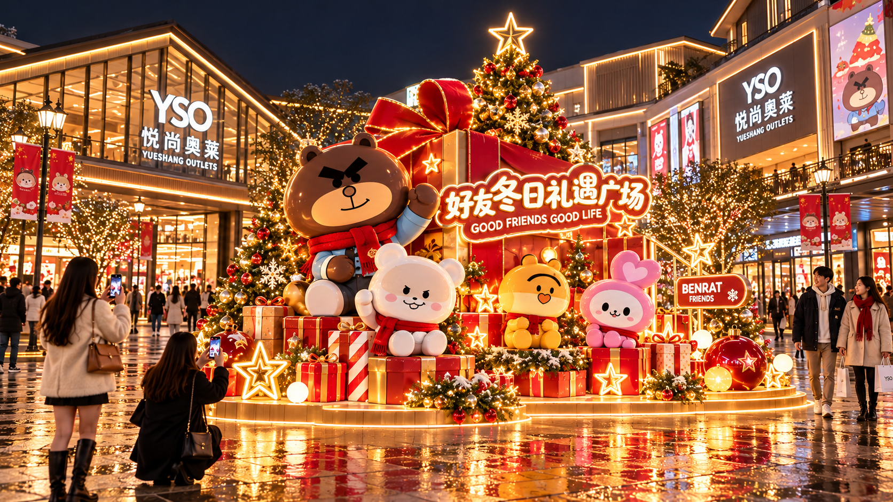

01
入口形象
好友的节日邀请
以入口建筑与好友装置共同迎宾，让抵达的第一眼，就知道节日从这里开始。
创意表达
主题形象与礼物元素建立到达记忆；日景与夜景效果供对照。
参与方式
走近主题装置，与同行好友留下第一张到达合影。

把快乐装进节日
与好友一起，发现节日里的每一份惊喜。
以“送给好友的一份心意”为线索，让购物、偶遇与相聚，在真实的商业空间里自然发生。
让熟悉的好友，
走进真实生活。
从入口的欢迎，到广场的相聚，再到逛街途中的不期而遇。熟悉的好友带着礼物走进悦上奥莱，让一次日常出行，多一段值得记住的节日经历。
好友是主角，礼物是线索，商业空间是故事的舞台。
延续原始角色形象，以相聚、分享与出发的动作建立亲近感。
用礼盒与购物袋连接节日赠礼和奥莱购物的生活情境。
主景负责吸引与合影，沿途节点串联购物、探索与休憩。
首轮围绕圣诞 + 元旦延续同一条好友故事。可通过祝福文字、礼物道具与局部节点更新转换节日情绪，具体运营内容待确认。
从入口到外场，从街区到室内。十组空间创意，共同组成一段连续的节日体验。
空间顺序依据效果图中的空间类型梳理，实际动线需结合总平面图复核。组内图片用于创意对照，不代表全部同步实施。
以入口建筑与好友装置共同迎宾，让抵达的第一眼，就知道节日从这里开始。
主题形象与礼物元素建立到达记忆；日景与夜景效果供对照。
走近主题装置，与同行好友留下第一张到达合影。
把好友之间的赠礼瞬间放大，成为广场里可以走近的节日焦点。
以礼盒、圣诞树和多角色组合营造冬日相聚的广场焦点。
以圆形暖光框景与四位好友的组合，形成清晰的夜景合影背景。
大型角色、礼物与暖光共同组织主景，形成聚集和合影的视觉中心。
在主景前停留、相聚，用一张合影记录这次节日之约。
将购物袋变成好友相遇的舞台，让购物心愿有了可见的形状。
以购物袋、角色组合与灯光形成独立互动节点，延续广场的节日情绪。
靠近角色、寻找喜欢的合影角度，把购物的快乐一起分享。
把主题带进商业街区，在行进的动线上，留下一处相聚的理由。
以主题装置或两侧角色呼应形成街区焦点；组内效果作为方案对照。
逛街途中与好友汇合，停留合影后继续探索沿街店铺。
让下一次相遇发生在途中，用轻量角色场景延续主景之外的快乐。
以爱心框景、购物袋与好友组合，形成温暖亲切的街区合影节点。
结合街区转角与沿途空间，以分散节点和夜景暖光形成持续陪伴。
边逛边发现不同的好友，在喜欢的小场景旁自然停留。
在空间转换的地方，让熟悉的好友再次出现，接续室外的节日故事。
以两侧好友、旅行道具和导视情境，衔接楼层之间的节日体验。
利用扶梯厅两侧形成角色呼应，建立室内到达的欢迎感。
进入室内或上下楼时再次遇见角色，选择合适的位置合影。
将好友送礼和购物的生活情境，放进日常逛街的节奏。
以购物袋、礼物与角色组合构成沿线场景，连接室内购物体验。
在通道旁近距离观看与合影，把节日心情带进下一段行程。
在室内中庭，以醒目的角色与购物袋组合，迎接每一次到达。
以挥手的大型好友、购物袋和节庆暖光，建立中庭到达记忆。
让好友从大购物袋中探出，把购物的期待变成直观的视觉惊喜。
挥手迎宾与购物袋探出两种情境，分别表达欢迎与惊喜，供中庭创意方向对照。
走近熟悉的好友，和家人、伙伴留下一张节日合影。
从冬日穿搭到新年出发，让好友的故事连接更多生活愿望。
以服饰、试衣镜与购物袋连接冬日穿搭和好友选礼。
用行李箱、相机和出发指引，把好友相聚延伸为新年启程。
时尚衣橱与旅行出发站两条创意，将选礼、穿搭和启程融入同一套好友主题。
发现喜欢的服饰与旅行道具，选择一个属于自己的合影故事。
把逛街中的休憩，变成一次与好友共享的温暖时刻。
以休憩长椅、饮品和角色自拍动作营造轻松的陪伴情境。
以手持暖饮的角色和长椅情境，表现可以靠近、陪伴与合影的温度。
以甜点、茶桌与好友围坐的情境，让休闲时光成为合影故事。
以小食摊位和好友分享美食的动作，呈现充满生活感的主题场景。
休憩长椅、暖饮、下午茶与小食堂四种场景，延续好友陪伴和分享的生活情绪。
以靠近、围坐和合影的画面表达亲近感；实际座椅功能及餐饮联动方式待深化。
六组原始单体效果，集中查阅角色动作、道具与组合关系。保留甲方 IP 原始形象。
礼盒与购物袋之间，藏着好友相聚的期待。
角色从心形购物袋中探出，把心愿装进节日。
好友围绕礼物相聚，以分享开启节日派对。
行李箱与饮品，记录好友结伴出发的轻松时刻。
以大礼盒与好友组合，放大节日赠礼的心意。
购物袋、礼盒与好友，将购物的快乐一起分享。
六组完整场景拼图，补充不同动作与点位的创意参考。点击图片，可放大查看每一个片段。
从休憩、导视到橱窗与出行，用一组生活片段延续好友的街区故事。
在转角、窗边、咖啡与礼物之间，让熟悉的好友持续出现。
围绕分享、购物、出发与节日合影，探索九组温暖的角色情境。
以橱窗发现、休憩阅读和好友互动，补充商业动线里的小惊喜。
从挥手迎宾到礼物、爱心与暖饮，集中呈现不同的节点创意。
将结伴出发、休憩、导视与亲近互动，融入轻松的冬日相聚。
以好友为主角，以礼物为线索，以空间为舞台。让顾客从被吸引，到愿意停留，再到带走一段节日记忆。
建立到达记忆与合影焦点
让探索中持续出现新的相遇
把购物与休闲连接成快乐体验
深化说明：实际点位与通行关系需结合总平面图复核；玻璃钢装置的结构、尺寸、重心和耐候性需后续深化。
和好友一起，
把节日过成记忆。